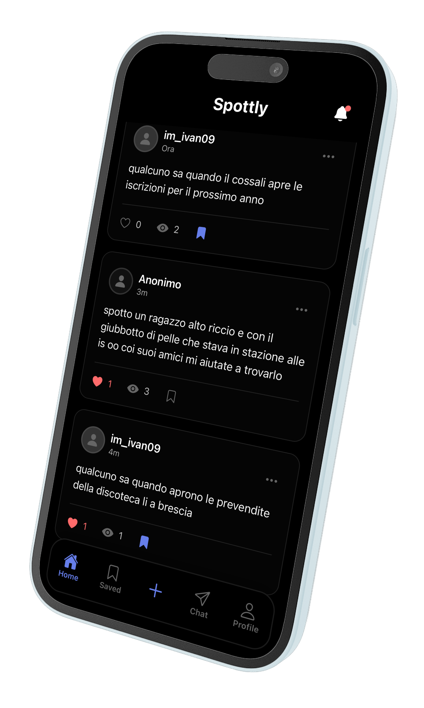

È uno spotted.
Non è un DM.
Non è un match.
È un feed.
- ⚡ L’hai visto? Spottalo.
- 🔥 Anonimo, easy, Spottly.
- 👀 Oops, spotted!
Spottly è dove finiscono tutti gli spotted degli studenti. Hai visto qualcuno in corridoio, in classe o all’uscita e non hai detto nulla? Tranquillo, ci pensa Spottly. Scrolla il feed, posta in anonimo e scopri se qualcuno ha spottato proprio te. Zero imbarazzo, solo vibes.
